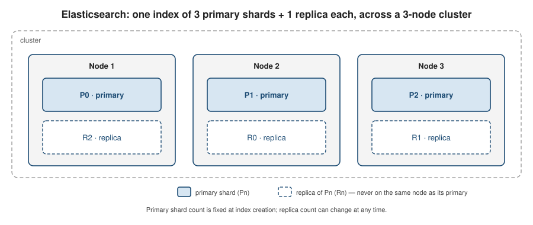

Elasticsearch
|
This content was generated with the assistance of AI and should be verified against the official documentation before being relied on in production. |
Elasticsearch is a distributed full-text search and analytics engine built on Apache Lucene. This page is an overview of the concepts you need before using it — the inverted index, documents and shards, analysis, and the query DSL — and of how Spring Boot and Spring Data Elasticsearch connect to it. For the in-depth reference (relevance tuning, aggregations, cluster operations), see Elasticsearch Reference.
Why a search engine
A relational WHERE column LIKE '%term%' scans rows and cannot use a normal index for a leading wildcard, so
it degrades linearly with table size and has no notion of "how well" a row matches. A search engine instead
builds an inverted index: for every term it stores the list of documents containing it, so a lookup is a
dictionary hit plus a list merge regardless of corpus size. On top of that it gives you relevance ranking
(results ordered by how good a match they are, not just yes/no), typo tolerance (fuzzy matching, stemming,
synonyms), and faceting (counts per category, computed alongside the results).
Elasticsearch is usually run alongside a system of record, not as the primary store: the relational or document database owns the authoritative data and its transactions, and a subset of that data is projected into Elasticsearch for querying. Two common ways to keep the projection current are dual writes (the application writes both stores) and change data capture (a connector tails the database’s change log and feeds Elasticsearch); CDC avoids the "wrote one store, crashed before the other" inconsistency. See Choosing the Right Database for where search fits among the database categories.
Documents, indices, shards
-
A document is a JSON object — the unit you index and retrieve, identified by an
_id. -
An index is a named collection of documents with a shared mapping (its schema). It is the primary unit of querying.
-
An index is physically split into primary shards, each a self-contained Lucene index. The primary shard count is fixed when the index is created (changing it means reindexing). A document is routed to one primary shard by a hash of its
_id. -
Each primary shard can have zero or more replica shards — exact copies that provide redundancy and extra read capacity. Replica count can be changed at any time.
-
Shards are distributed across nodes in a cluster. Elasticsearch never places a replica on the same node as its primary, so losing a node cannot lose both copies of a shard.

Analysis and mappings
Analysis turns text into the terms stored in the inverted index. An analyzer is a pipeline of three
stages: character filters (rewrite the raw string — strip HTML, map characters), a tokenizer (split the
stream into tokens — typically on word boundaries), and token filters (lower-case, remove stop words, apply
stemming or synonyms). The same analyzer runs at index time (on the field value) and at query time (on the
query string), so "Running Shoes" indexed and "run shoe" searched can still match.
A mapping declares each field and its type. The two text-bearing types to know:
-
text— analyzed into terms; used for full-textmatchqueries. Not usable for sorting or aggregations. -
keyword— stored verbatim as a single term; used for exact filters, sorting, and aggregations (a status code, a tag, an enum).
A single source field is often mapped as both — title as text for search and title.keyword as keyword
for sorting. Elasticsearch will dynamically infer a mapping for fields it has not seen, which is convenient in
development but drifts; production indices should declare an explicit mapping.
Querying and relevance
Queries are expressed in a JSON query DSL, composed from two kinds of clause:
-
Leaf queries match against one field:
match(analyzed full-text),term(exact, un-analyzed),range(numeric/date bounds), and relatives (prefix,wildcard,fuzzy). -
Compound queries combine leaves:
boolwithmust(all required, scored),should(optional, boosts score),filter(required, not scored), andmust_not(required absent, not scored).
Clauses in query context (must, should) contribute a relevance score, by default computed with the
BM25 ranking function — term frequency in the document, inverse document frequency across the index, and
field-length normalisation. Clauses in filter context (filter, must_not) only include/exclude, produce no
score, and their results are cached, so put yes/no conditions (date ranges, status, tenant) there and keep
match for the parts where ranking matters.
Aggregations compute buckets and metrics (counts per category, averages, histograms, date ranges) over the same result set in one request. Elasticsearch is near real-time: an indexed document becomes searchable only after a refresh, which happens automatically about once per second rather than on every write.
Spring Boot integration
Add the starter:
<dependency>
<groupId>org.springframework.boot</groupId>
<artifactId>spring-boot-starter-data-elasticsearch</artifactId>
</dependency>Spring Boot auto-configures the Elasticsearch Java API Client (the current official client — the old
TransportClient and RestHighLevelClient are gone) from spring.elasticsearch.*: uris, username /
password, and the SSL / connection-timeout settings. Spring Data Elasticsearch then layers @Document
mapping, repositories, and ElasticsearchOperations on top.
-
Map a POJO with
@Document(indexName = "…"), mark the id with@Id, and declare field types with@Field(type = FieldType.Text | Keyword | …). -
Derive queries by declaring an
ElasticsearchRepository<T, ID>with method names, as in the other Spring Data modules. -
For a hand-written DSL query, inject
ElasticsearchOperationsand build aNativeQuery. -
Integration-test against a real node with the Testcontainers
elasticsearchmodule — see Unit and Integration Testing.
@Document(indexName = "books")
public class Book {
@Id
private String id;
@Field(type = FieldType.Text)
private String title;
@Field(type = FieldType.Keyword)
private String genre;
@Field(type = FieldType.Integer)
private int year;
// getters and setters omitted
}
public interface BookRepository extends ElasticsearchRepository<Book, String> {
List<Book> findByGenre(String genre);
}
@Service
public class BookSearchService {
private final ElasticsearchOperations operations;
public BookSearchService(ElasticsearchOperations operations) {
this.operations = operations;
}
// full-text on title (scored), genre as a cached filter (not scored)
public List<Book> search(String text, String genre) {
Query query = NativeQuery.builder()
.withQuery(q -> q.bool(b -> b
.must(m -> m.match(mm -> mm.field("title").query(text)))
.filter(f -> f.term(t -> t.field("genre").value(genre)))))
.build();
return operations.search(query, Book.class)
.stream()
.map(SearchHit::getContent)
.toList();
}
}spring:
elasticsearch:
uris: https://localhost:9200
username: elastic
password: changeme
connection-timeout: 3s
socket-timeout: 30sAnalyzers on document fields
analyzer — and, when it must differ, searchAnalyzer — is set directly on the @Field annotation shown
above. A built-in analyzer is referenced simply by name:
@Field(type = FieldType.Text, analyzer = "english")
private String description;Unlike Hibernate Search’s LuceneAnalysisConfigurer
(Hibernate Search Analyzers), Spring Data Elasticsearch has no Java API for
defining a custom analyzer — it is declared in the index’s settings and only referenced by name from the
annotation. @Setting points the @Document at that settings file:
@Document(indexName = "articles")
@Setting(settingPath = "elasticsearch/articles-settings.json")
public class Article {
@Id
private String id;
@Field(type = FieldType.Text, analyzer = "content_analyzer")
private String body;
// other fields, getters/setters omitted
}{
"analysis": {
"analyzer": {
"content_analyzer": {
"type": "custom",
"tokenizer": "standard",
"filter": [ "lowercase" ]
}
}
}
}The settings file can declare any chain the underlying Elasticsearch analysis API supports — stemming, stop
words, synonyms — exactly as shown for stand-alone Elasticsearch in
Text analysis' custom analyzers section; this
minimal example only demonstrates the settings-to-@Field-reference mechanism itself.
A distinct search_analyzer follows the same pattern that
Text
analysis' search_analyzer section describes at the Elasticsearch level, expressed on the annotation as
@Field(type = FieldType.Text, analyzer = "autocomplete_index", searchAnalyzer = "autocomplete_search").
The most common built-in analyzer names usable directly via analyzer = "…" are:
| Analyzer name | Purpose |
|---|---|
|
General-purpose Unicode segmentation, lowercasing — the default. |
|
Splits on non-letters and lowercases; no stop words, no stemming. |
|
Splits only on whitespace; no lowercasing. |
|
|
|
The whole input becomes one unmodified token. |
|
Ready-made per-language stemming and stop words. |
This is an abbreviated summary, not a second source of truth — see Text analysis' built-in analyzers table for the complete, authoritative list and behavior of each, and for tokenizers/token filters to assemble a custom chain from.
The most common of these analyzers appear, under different names, across every stack this site documents:
| Elasticsearch analyzer name | Hibernate Search equivalent | Apache Lucene class |
|---|---|---|
|
|
|
|
|
|
|
|
|
|
|
|
|
|
|
|
|
|
This table is a curated subset for orientation, not exhaustive — Elasticsearch and Hibernate Search’s
Elasticsearch backend also ship pattern and fingerprint analyzers, which have no dedicated Lucene-class
equivalent documented on this site. See
Hibernate Search Analyzers for the
Hibernate Search side of this table (including how to define a custom analyzer there via
LuceneAnalysisConfigurer/ElasticsearchAnalysisConfigurer), and
Built-in analyzers & CustomAnalyzer for the
underlying Lucene classes.
More Like This: finding similar documents
The Java API Client’s query builders support more_like_this the same way the BookSearchService example
above builds a bool query — via Query.of(q → q.moreLikeThis(…)) inside a NativeQuery.
public List<Book> findSimilar(String bookId) {
Query query = NativeQuery.builder()
.withQuery(q -> q.moreLikeThis(m -> m
.fields("title", "description")
.like(l -> l.document(d -> d.index("books").id(bookId)))
.minTermFreq(2)
.minDocFreq(3)))
.build();
return operations.search(query, Book.class)
.stream()
.map(SearchHit::getContent)
.toList();
}When there is no existing document to reference yet — matching a draft against already-published content, for
example — supply free text instead with .like(l → l.text(freeText)) in place of the .document(…) call
above.
As with the reference-page section, referencing an existing document by id benefits from @Field(…,
termVector = TermVector.yes) (or a more specific variant) on the fields used in fields(…), for
indexing/query performance at scale; see
More Like This for the
full indexing-requirements explanation.
References
-
Elasticsearch Reference — the dedicated in-depth reference section
-
Elasticsearch Text Analysis — the full analyzer, tokenizer and token-filter reference
-
Elasticsearch Search Extras — highlighting, suggesters, collapse, percolation, and the more_like_this query for finding similar documents
-
Hibernate Search Analyzers — built-in and custom analyzers on Hibernate Search’s Lucene and Elasticsearch backends
-
Apache Lucene Built-in analyzers & CustomAnalyzer — the underlying Lucene analyzer classes